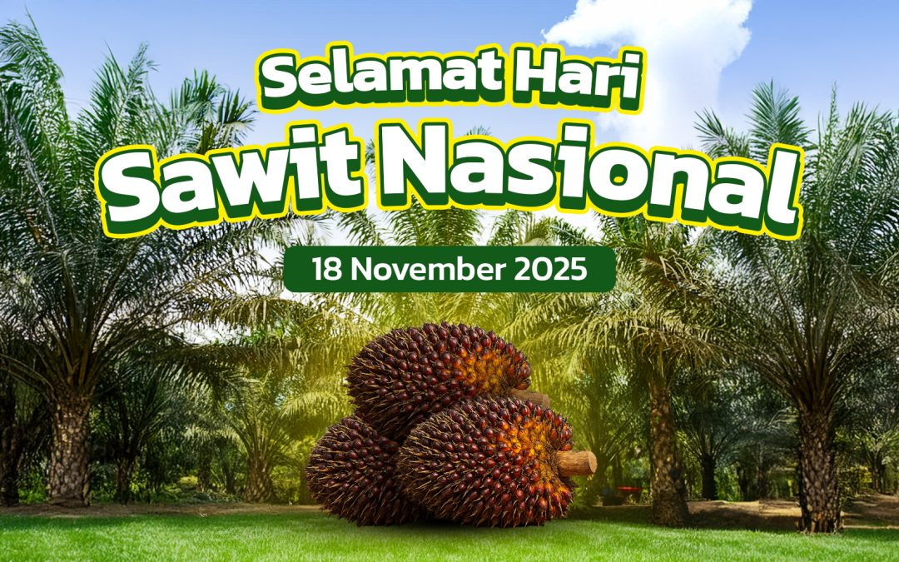

Ini Website Jualan Sawit
kami menjual bahan baku berkualitas jika kalian berminat bisa langsung dicoba

Perbandingan Minyak Sawit & Kelapa
Sumber Ekstrasi
Minyak Sawit: Diekstrak dari daging buah pohon kelapa sawit (*Elaeis guineensis*)
Minyak Kelapa: Diekstrak dari daging buah kelapa tua (*Cocos nucifera*).
Sumber Nutrisi
Minyak Sawit: Memiliki proporsi seimbang antara lemak jenuh dan lemak tak jenuh.
Minyak Kelapa: Didominasi oleh lemak jenuh tinggi, terutama asam laurat yang baik untuk energi..
Titik Asap
Minyak Sawit: Titik asap tinggi (~232°C), sangat stabil untuk menggoreng deep-fry.
Minyak Kelapa: Titik asap sedang (~177°C), lebih cocok untuk menumis atau *baking*.
Penggunaan Utama
Minyak Sawit: Banyak digunakan pada minyak goreng curah, margarin, dan produk pangan olahan massal.
Minyak Kelapa: Populer untuk produk kecantikan (skincare), diet keto, dan minyak VCO.
Keberhasilan di industri sawit dibangun di atas fondasi kerja keras
pemupukan yang tepat, dan strategi agritech yang cerdas.Call to action! It's time!
Sign up for our product by clicking that button right over there!